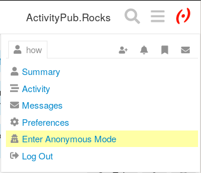

Discourse provide a feature to “post anonymously” on the forum. This topic explains how it works, and how to use it.
Before posting anonymously, you should have read this!
What is meant by “anonymous”?
Discourse has a functionality that allows you to enter anonymous mode. A new account is created each time you enter this mode, so that administrators and moderators cannot determine who is posting.
But remember that this is not strong anonymity: someone could determine who you are by analyzing who is online at this time and by other means.
Why post “anonymously”?
Anonymous mode is enabled so that everyone can convey messages related to support issues, e.g., when you need to reach out for any reason (problem with an admin, another person, or simply you are burnout and need some support).
Anonymous mode does not allow you to ignore the rules and norms of this community: abuse will result in removing this functionality and a permanent ban if you’re caught.
Where to post “anonymously”?
Please do not abuse this functionality: we’ve prepared a dedicated space in #community:well-being for venting out and reaching out for help. Please use this space and avoid posting anonymously where you’re expected to be identified. See Community Well-Being.
How to Enter Anonymous Mode?
Click your avatar, your username, then scroll down to “Enter anonymous mode”.

Note that you will need to logout and login again to “leave” anonymous mode.